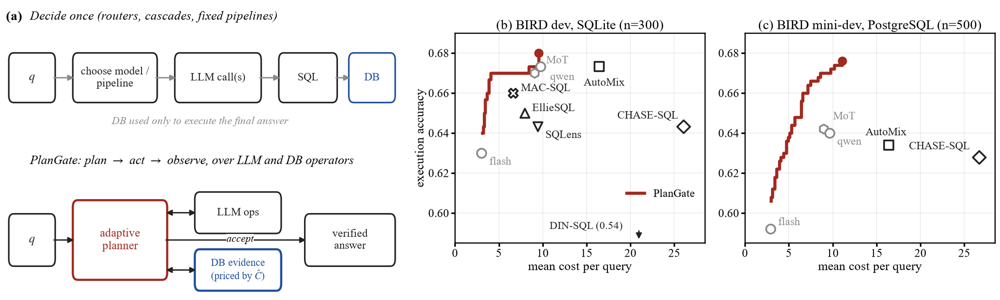
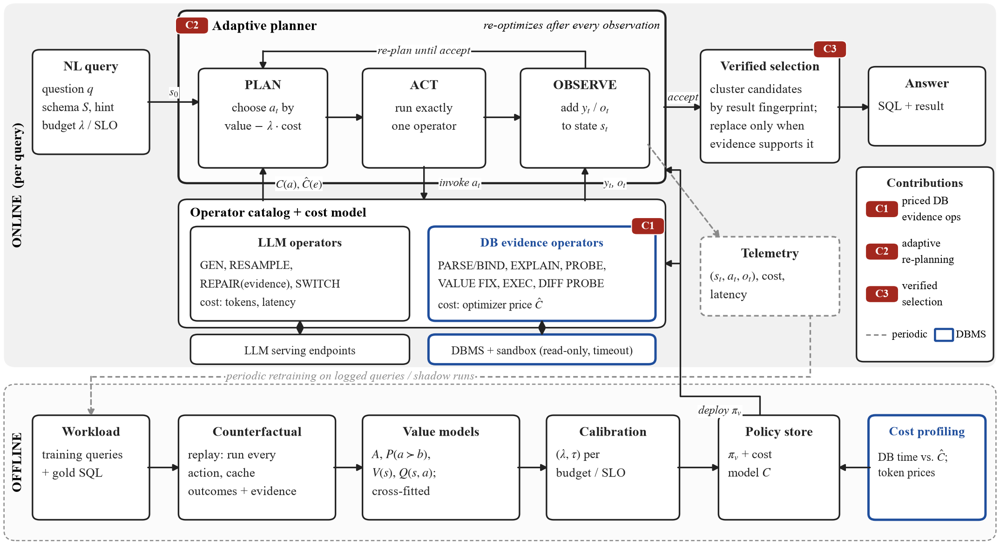
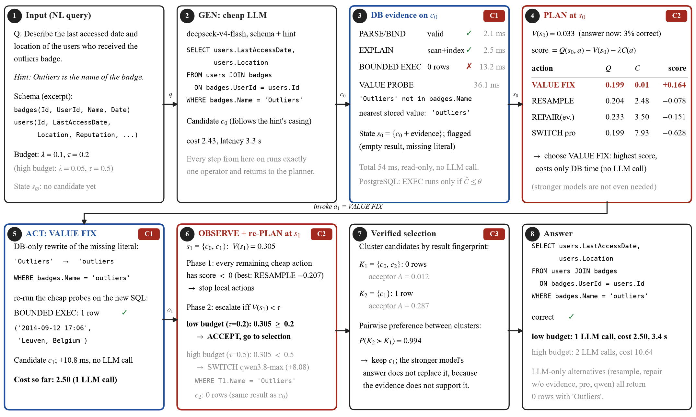
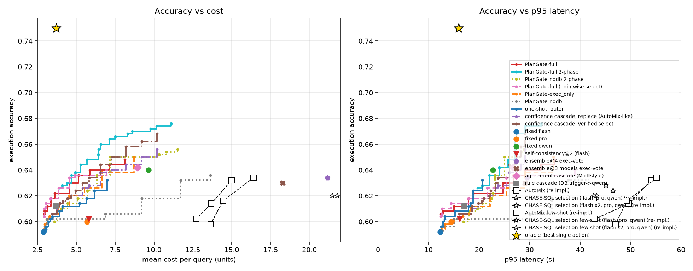
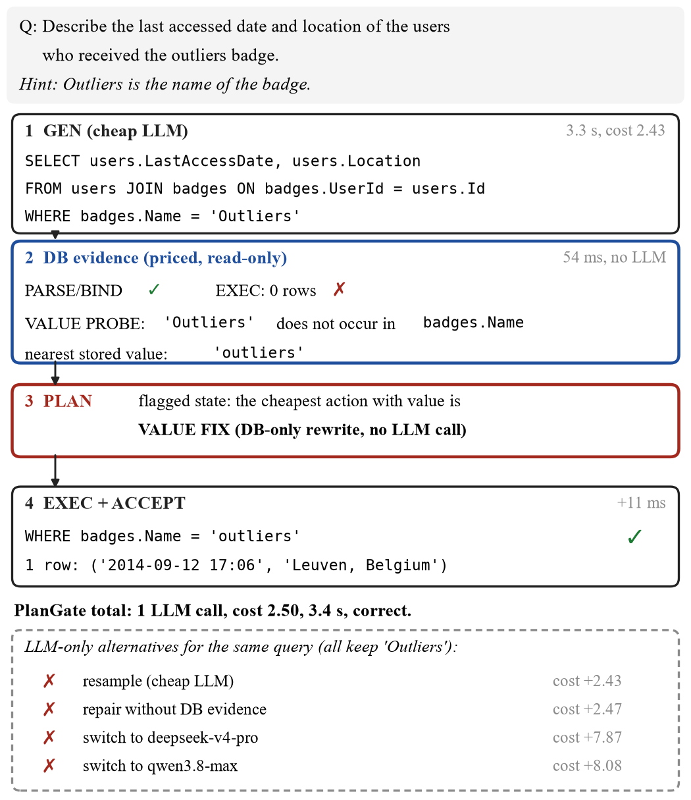

Báo cáo kỹ thuật: thiết kế hệ thống, thực nghiệm và kết quả · Tháng 10, 2026
Các hệ thống Text-to-SQL tiết kiệm chi phí hiện nay đưa ra quyết định một lần (chọn model, chọn pipeline hoặc thứ tự cascade) và chỉ dùng DBMS để thực thi câu SQL cuối cùng. PlanGate coi việc phục vụ Text-to-SQL là bài toán lập kế hoạch suy luận thích nghi trên cả operator LLM lẫn operator DBMS: sau mỗi quan sát, hệ thống chọn lại thao tác tiếp theo dựa trên giá trị ước lượng trừ chi phí, trong đó các thao tác lấy bằng chứng từ DB được optimizer định giá trước khi chạy. Thực nghiệm trên BIRD dev (SQLite, 300 câu) và BIRD mini-dev (PostgreSQL 16, 500 câu) cho thấy bằng chứng từ DB mang nhiều thông tin cho quyết định hơn một lần gọi LLM bổ sung với độ trễ thấp hơn vài trăm lần; ước lượng chi phí của optimizer tương quan Spearman 0.962 với thời gian thực thi; và planner đạt accuracy cao hơn baseline ngoài tốt nhất từ 1.6 đến 3.8 điểm ở cùng ngân sách, đồng thời cần ít hơn 45–88% chi phí để bằng accuracy của sáu phương pháp đã công bố được cài đặt lại. Khi bỏ quyền truy cập DB, lợi thế này giảm rõ rệt.

Bài toán đặt ra là: cho câu hỏi ngôn ngữ tự nhiên, schema, database và một danh mục operator LLM và DBMS, xây dựng một kế hoạch suy luận riêng cho từng truy vấn sao cho tối thiểu hóa chi phí end-to-end mà vẫn giữ chất lượng đáp án. Kế hoạch không cố định từ đầu mà được lập lại sau mỗi quan sát.
Động cơ đến từ hai quan sát. Thứ nhất, sau khi sinh SQL, hệ thống có thêm nhiều thông tin chỉ dành riêng cho candidate đó (bảng và cột được chọn, cấu trúc join, kết quả kiểm tra giá trị, hình dạng kết quả thực thi) mà một router đặt trước bước sinh không thể dùng. Thứ hai, DBMS có thể cung cấp các thông tin này với chi phí rất thấp và còn biết trước chi phí của chúng thông qua optimizer. Vì vậy DBMS nên được xem là một thành phần tham gia vào quá trình suy luận, không chỉ là nơi chạy câu SQL cuối.

Phần này trình bày kiến trúc theo phương pháp STAR (Situation, Task, Action, Result). Mục 2.1 áp dụng STAR cho toàn hệ thống. Mục 2.2 áp dụng STAR cho từng thành phần trong Hình 2, kèm định nghĩa hình thức và giải thuật. Mục 2.3 minh họa toàn bộ luồng xử lý trên một câu hỏi thật (Hình 3).
Situation (bối cảnh). Một hệ thống Text-to-SQL phục vụ thực tế nhận luồng câu hỏi ngôn ngữ tự nhiên trên các database có sẵn, và có trong tay nhiều loại tài nguyên tính toán với chi phí rất khác nhau: các model LLM rẻ và đắt, cùng chính DBMS chứa dữ liệu. Các hệ thống tiết kiệm chi phí hiện nay (router như EllieSQL, cascade như AutoMix, pipeline nhiều bước như DIN-SQL hay MAC-SQL, ensemble kèm bộ chọn như CHASE-SQL) có chung một đặc điểm: phần lớn quyết định về cách chi tài nguyên được đưa ra trước khi thấy candidate SQL hoặc theo một trình tự cố định, còn DBMS chủ yếu chỉ được dùng để thực thi đáp án cuối. Các thực nghiệm sơ bộ cho thấy bối cảnh này lãng phí theo ba cách. Thứ nhất, dư địa nằm ở việc chọn đúng thao tác cho từng câu chứ không ở việc dùng model to hơn: oracle chọn cấu hình rẻ nhất làm đúng đạt 0.757 với chi phí 3.47, trong khi cấu hình cố định tốt nhất chỉ đạt 0.670 với chi phí 9.74, và model đắt nhất lại cho kết quả thấp nhất. Thứ hai, thông tin để ra quyết định chủ yếu xuất hiện sau khi sinh SQL và đến từ DB: router chỉ nhìn câu hỏi có AUROC khoảng 0.58–0.61, còn bốn thao tác DB rẻ (8–20 ms) nâng AUROC thêm 0.06–0.08, nhiều hơn một lần gọi LLM bổ sung vốn tốn 3–5 giây. Thứ ba, chính LLM không kiểm chứng được SQL nếu thiếu bằng chứng thực thi: judge chỉ đọc SQL đạt 0.43–0.47 khi chọn giữa hai candidate, tức không tốt hơn ngẫu nhiên.
Task (nhiệm vụ). Với mỗi truy vấn q trên schema S, hệ thống cần chọn một chuỗi operator a1, a2, … từ một catalog gồm cả operator LLM và operator DBMS, rồi trả về một câu SQL, sao cho tối đa hóa xác suất đáp án đúng trừ λ lần tổng chi phí; λ là tham số ngân sách, hoặc thay bằng một SLO về latency. Từ các quan sát ở trên, thiết kế phải thỏa năm yêu cầu:
Action (hành động). PlanGate tách hệ thống thành hai vòng lặp. Vòng online chạy cho từng truy vấn: adaptive planner duy trì trạng thái st, mỗi bước chọn đúng một operator, chạy nó, cập nhật trạng thái và lập lại kế hoạch (R1). Catalog đặt operator LLM và operator DB cạnh nhau, mỗi operator có giao diện invoke() và cost(); chi phí của thao tác DB lấy từ ước lượng của optimizer (R2). Mọi thao tác DB đi qua một sandbox read-only có timeout (R4). Đáp án cuối do bộ chọn có kiểm chứng quyết định trên các cụm kết quả thực thi (R3). Vòng offline chạy định kỳ: phát lại phản thực tế mọi action trên một workload huấn luyện, học các mô hình giá trị mà planner dùng, và hiệu chỉnh tham số theo ngân sách. Mọi model chỉ được gọi qua API (R5).
Result (kết quả). Với kiến trúc này, PlanGate đạt accuracy cao hơn baseline ngoài tốt nhất từ 1.6 đến 3.8 điểm ở cùng ngân sách, có ý nghĩa thống kê ở phần lớn các mức (Mục 4.6). Để đạt cùng accuracy, PlanGate cần ít hơn 45–88% chi phí so với sáu phương pháp đã công bố được cài đặt lại (Mục 4.7). Định giá bằng optimizer cắt 66–73% thời gian DB mà accuracy gần như không đổi (Mục 4.5). Khi bỏ quyền truy cập DB, cùng planner mất phần lớn lợi thế; điều này cho thấy lợi ích đến từ việc đưa DBMS vào vòng suy luận chứ không chỉ từ việc kết hợp nhiều model.
S. Các hệ thống hiện có coi model LLM là thứ duy nhất có thể "chọn", còn kiểm tra trên DB là một bước cố định trong pipeline. Chi phí của hai loại tài nguyên này vì vậy không bao giờ được đặt lên cùng một thang đo.
T. Cần một cách biểu diễn chung để planner so sánh trực tiếp, chẳng hạn "chạy một value probe 4 ms" với "gọi model mạnh tốn 8 đơn vị và 3 giây".
A. Mỗi operator là một thực thể trong catalog với hai giao diện: invoke(state) trả về một candidate mới (operator LLM) hoặc một quan sát (operator DB), và cost(state) trả về chi phí dự kiến. Với operator LLM, chi phí là hệ số giá của model nhân số token có trọng số (token sinh tính gấp bốn token prompt), cộng latency đo được. Với operator DB, chi phí là thời gian DB quy đổi; riêng thao tác thực thi được định giá trước bằng ước lượng EXPLAIN, ký hiệu Ĉ. Bảng 1 liệt kê catalog hiện tại. Thiết kế này tương tự cách một DBMS giữ catalog các physical operator kèm mô hình chi phí, với điểm khác là ở đây LLM cũng là một loại physical operator.
R. Planner chọn được giữa operator DB và operator LLM bằng cùng một công thức giá trị trừ chi phí. Trong ví dụ ở Hình 3, VALUE FIX có chi phí 0.01 nên được ưu tiên hơn mọi lời gọi LLM dù giá trị dự kiến tương đương.
| Loại | Operator | Chức năng | Chi phí |
|---|---|---|---|
| LLM | GEN | sinh SQL bằng model rẻ | token × giá, latency |
| RESAMPLE | sinh lại cùng model (T = 0.8) | token × giá | |
| REPAIR(evidence) | sửa SQL dựa trên bằng chứng từ DB | token × giá | |
| SWITCH | chuyển sang model mạnh hơn | token × giá | |
| DBMS | PARSE/BIND | kiểm tra cú pháp, bảng, cột | < 3 ms |
| EXPLAIN | đặc trưng plan, ước lượng chi phí Ĉ | 0.6 ms (PostgreSQL) | |
| VALUE PROBE | kiểm tra literal có tồn tại trong cột, tìm giá trị gần nhất | vài ms | |
| VALUE FIX | viết lại literal bằng giá trị có trong DB, không gọi LLM | vài ms | |
| BOUNDED EXEC | thực thi có giới hạn, giữ hình dạng kết quả và fingerprint | Ĉ (định giá trước) | |
| DIFF PROBE | tính A∖B và B∖A giữa hai candidate | Ĉ |
Bảng 1: Operator catalog. Mọi thao tác DB chạy trên kết nối read-only, chỉ cho phép một câu SELECT, có statement timeout và giới hạn số dòng.
S. Phần lớn lỗi của SQL do LLM sinh không phải lỗi cú pháp mà là lỗi ngữ nghĩa: chọn sai cột, sai giá trị literal, sai hàm tổng hợp. Các lỗi này không hiện ra khi chỉ đọc SQL, nhưng nhiều lỗi hiện ra ngay khi đối chiếu với dữ liệu thật.
T. Cần một tập thao tác trên DB rẻ, an toàn, cho kết quả có cấu trúc để planner dùng làm đặc trưng, và có giá biết trước để tránh các truy vấn đắt bất ngờ (thời gian thực thi có đuôi dài: 5% candidate chậm nhất chiếm 34% tổng thời gian).
A. Sáu operator được cài đặt. PARSE/BIND chuẩn bị câu lệnh để bắt lỗi tên bảng, tên cột. EXPLAIN lấy cấu trúc plan và ước lượng chi phí. VALUE PROBE tách mọi predicate dạng cột = 'giá trị' hoặc LIKE, chạy truy vấn EXISTS trên từng cột, và nếu giá trị không tồn tại thì tìm các giá trị gần nhất theo chuỗi con. VALUE FIX viết lại literal khi DB có đúng một giá trị khớp (không phân biệt hoa thường) hoặc một giá trị gần duy nhất, hoàn toàn không gọi LLM. BOUNDED EXEC thực thi trong giới hạn thời gian và số dòng, chỉ giữ hình dạng kết quả (số dòng, số cột, tỉ lệ NULL, dòng trùng) và một fingerprint không phụ thuộc thứ tự dòng. DIFF PROBE tính A EXCEPT B và B EXCEPT A để làm rõ hai candidate khác nhau ở đâu. Sandbox mở kết nối read-only, chỉ chấp nhận một câu SELECT hoặc WITH duy nhất, đặt statement_timeout cho từng câu lệnh và giới hạn số dòng lấy về. Với định giá bằng optimizer, BOUNDED EXEC chỉ chạy khi Ĉ ≤ θ.
R. Bốn thao tác rẻ nhất nâng AUROC dự đoán đúng sai thêm 0.06–0.08 với 8–20 ms. Ước lượng Ĉ tương quan Spearman 0.962 với thời gian thực thi thật, và định giá cắt 66–73% thời gian DB (81–86% ở p95) mà accuracy gần như không đổi (Bảng 6).
S. Một policy cố định (luôn thử model rẻ rồi mới lên model đắt, hoặc luôn chạy đủ mọi bước) không phản ánh được rằng hành động tốt nhất phụ thuộc vào trạng thái: khi DB đã gắn cờ candidate, các action rẻ cứu được 50% lỗi; khi DB không thấy gì, chỉ đổi sang model khác mới có ích.
T. Cần một planner chọn hành động tiếp theo dựa trên trạng thái hiện tại, cân bằng giữa giá trị dự kiến và chi phí, biết khi nào dừng và khi nào leo lên model mạnh.
A. Trạng thái được định nghĩa là st = (q, S, {(yi, Ei)}, ct), gồm câu hỏi, schema, các candidate yi đã có kèm bằng chứng DB Ei, và chi phí đã tiêu ct. Đặc trưng trạng thái chia ba mức: P0 (câu hỏi và schema), P1 (thêm đặc trưng của SQL) và P2 (thêm bằng chứng DB và độ khớp kết quả thực thi giữa các candidate). Hai mô hình giá trị được học offline: V(s) là xác suất đáp án được chọn tại trạng thái s là đúng, và Q(s, a) là xác suất đúng nếu chạy thêm a rồi chọn lại. Policy gồm hai pha:
procedure PLANGATE(q, S, λ, τ)
c0 ← GEN_cheap(q, S) ▷ một lời gọi LLM
E[c0] ← PROBES(c0) ▷ bằng chứng DB; EXEC chỉ khi Ĉ ≤ θ
s ← {c0}
for k = 1 .. K_local do ▷ pha 1: hành động rẻ, tại chỗ
a* ← argmax_{a ∈ A_local \ s} Q(s,a) − V(s) − λ·C(a)
if Q(s,a*) − V(s) − λ·C(a*) ≤ 0 then break
y ← INVOKE(a*); E[y] ← PROBES(y); s ← s ∪ {y}
if V(s) < τ then ▷ pha 2: leo lên model mạnh
y ← GEN_strong(q, S); E[y] ← PROBES(y); s ← s ∪ {y}
return SELECT(s) ▷ chọn có kiểm chứng (C3)
Ở đây Alocal = {VALUE FIX, RESAMPLE, REPAIR(evidence), SWITCH pro} và Klocal = 2. Điều kiện dừng Q − V − λC ≤ 0 có ý nghĩa trực tiếp: chỉ trả thêm chi phí khi mức tăng xác suất đúng dự kiến lớn hơn giá của nó. Pha 2 tách riêng vì policy tham lam một bước luôn ưu tiên hành động rẻ, dùng hết ngân sách hành động và không bao giờ gọi model mạnh; ngưỡng τ trên V(s) cho phép leo thang khi trạng thái sau các hành động rẻ vẫn còn bất định. Về mặt khái niệm, cơ chế lập lại kế hoạch sau mỗi quan sát tương tự mid-query re-optimization trong xử lý truy vấn thích nghi, nhưng áp dụng cho không gian operator gồm cả LLM.
R. Planner sinh ra các kế hoạch khác nhau theo trạng thái: ở cùng một mức tham số, câu bị DB gắn cờ thường bắt đầu bằng REPAIR(evidence), RESAMPLE hoặc VALUE FIX, còn câu không bị gắn cờ phần lớn được chấp nhận ngay. So với planner tham lam một bước, policy hai pha đưa accuracy tối đa từ 0.667 lên 0.680 trên SQLite và từ 0.648 lên 0.676 trên PostgreSQL.
S. Pool candidate thường đã chứa đáp án đúng nhưng không chọn được nó: oracle chọn trong pool đạt 0.763, bỏ phiếu theo kết quả thực thi chỉ đạt 0.663. Thay candidate cũ bằng candidate mới một cách mù quáng còn làm giảm accuracy.
T. Cần một cơ chế chọn đáp án tận dụng bằng chứng thực thi, và chỉ cho phép candidate mới thay candidate cũ khi bằng chứng ủng hộ.
A. Candidate được gom cụm theo fingerprint kết quả thực thi: các SQL khác nhau nhưng cho cùng tập kết quả thuộc một cụm; candidate không thực thi được tạo cụm riêng. Mỗi cụm lấy đại diện là candidate có điểm bộ chấm A(g | S) cao nhất. Một mô hình ưu tiên cặp P(a ≻ b), học trên các cặp mà đúng một bên đúng, so sánh từng cặp đại diện dựa trên hiệu đặc trưng, nguồn sinh và điểm A của hai bên. Cụm được chọn là cụm có tổng Σb[P(a ≻ b) − P(b ≻ a)] lớn nhất, hòa thì xét theo A.
R. Bộ chọn cặp tốt hơn bộ chọn từng candidate (0.667 so với 0.653 trên SQLite). Trong Hình 3, câu trả lời sai của model mạnh nhất không thay được đáp án đúng do VALUE FIX tạo ra, vì P(K2 ≻ K1) = 0.994.
S. Để học Q(s, a) cần biết điều gì xảy ra với mọi hành động ở mọi trạng thái, nhưng khi vận hành thật hệ thống chỉ quan sát được hành động đã thực sự chọn.
T. Cần dữ liệu phản thực tế đủ để học các mô hình giá trị mà không làm tăng chi phí của vòng online, và cần chọn tham số λ, τ phù hợp với từng mức ngân sách hoặc SLO.
A. Với mỗi câu của workload huấn luyện, mọi action được chạy và cache lại (counterfactual replay), kèm bằng chứng DB và nhãn đúng sai theo execution accuracy. Từ đó liệt kê mọi tập candidate S có tối đa bốn phần tử để tạo dữ liệu cho A, P, V và Q; nhãn của Q được tính bằng cách phát lại thật: thêm a vào S, chọn lại bằng A và P, rồi xem đáp án có đúng không. Bốn mô hình được học bằng gradient boosting và cross-fit theo câu hỏi. Bước hiệu chỉnh quét λ ∈ {0.02, 0.05, 0.1, 0.25} và 15 giá trị τ từ 0.2 đến 0.9, chọn điểm vận hành tốt nhất cho từng mức ngân sách trên dữ liệu giữ lại, rồi lưu policy πv cùng mô hình chi phí vào policy store. Bước profiling chi phí đo thời gian DB theo Ĉ và giá token của từng model để cập nhật cost model.
R. Vòng online không phải trả chi phí học. Kiểm định split-half (chọn tham số trên một nửa số câu, đánh giá trên nửa còn lại) cho mức cải thiện +3.3 điểm trên SQLite và +4.2 điểm trên PostgreSQL, cho thấy kết quả không do chỉnh tham số trên chính tập đánh giá. Hạn chế hiện tại là workload huấn luyện vẫn là chính tập đánh giá, được cross-fit; telemetry và retraining định kỳ mới ở mức thiết kế.
| Thành phần | Trạng thái |
|---|---|
| Vòng online, operator LLM và DB, chọn có kiểm chứng, planner hai pha | đã cài đặt và đánh giá trên hai engine |
| Định giá bằng optimizer (C1) tích hợp vào planner | đã cài đặt và đánh giá trên PostgreSQL |
| Workload offline là tập train riêng | chưa: mô hình hiện được cross-fit trên chính tập đánh giá |
| Telemetry, retraining định kỳ, shadow runs | chưa (nét đứt trong Hình 2) |
Bảng 2: Trạng thái cài đặt các thành phần trong Hình 2.

Hình 3 đi theo đúng các bước của giải thuật ở Mục 2.2(c). Ở bước 1, câu hỏi hỏi ngày truy cập gần nhất và địa điểm của những người dùng nhận badge "outliers"; hint ghi "Outliers is the name of the badge". Ở bước 2, model rẻ sinh candidate c0 lọc theo badges.Name = 'Outliers', tức làm theo cách viết hoa trong hint; lời gọi tốn 3.3 giây và 2.43 đơn vị.
Bước 3 chạy các thao tác DB trên c0 trong 54 ms: câu lệnh hợp lệ, plan gồm một lượt quét và một lượt tìm theo chỉ mục, nhưng thực thi trả về 0 dòng, và value probe cho biết 'Outliers' không tồn tại trong cột badges.Name, giá trị gần nhất là 'outliers'. Trên SQLite không có ước lượng chi phí nên mọi probe đều chạy; trên PostgreSQL, thực thi chỉ chạy khi Ĉ ≤ θ.
Bước 4 là quyết định đầu tiên của planner. Mô hình giá trị ước lượng V(s0) = 0.033, tức nếu trả lời ngay thì gần như chắc chắn sai. Với λ = 0.1, VALUE FIX có điểm +0.164 (Q = 0.199, chi phí 0.01), còn RESAMPLE, REPAIR và SWITCH sang model pro đều có điểm âm vì chi phí từ 2.48 đến 7.93 đơn vị lớn hơn mức tăng giá trị dự kiến. Planner chọn VALUE FIX.
Bước 5 viết lại literal thành 'outliers' ngay trên DB, chạy lại các probe rẻ và nhận về một dòng kết quả, thêm 10.8 ms và không gọi LLM; đây là candidate c1. Ở bước 6, trạng thái mới s1 = {c0, c1} có V(s1) = 0.305. Mọi hành động rẻ còn lại đều có điểm âm nên pha 1 dừng. Ở pha 2, với ngân sách thấp (τ = 0.2), V(s1) ≥ τ nên planner chấp nhận. Với ngân sách cao (τ = 0.5), V(s1) < τ nên planner gọi thêm qwen3.8-max; model này cũng lọc theo 'Outliers' và trả về 0 dòng (candidate c2).
Bước 7 gom cụm theo kết quả: K1 = {c0, c2} (0 dòng, điểm A = 0.012) và K2 = {c1} (1 dòng, A = 0.287). Mô hình ưu tiên cặp cho P(K2 ≻ K1) = 0.994, nên đáp án của VALUE FIX được giữ dù model mạnh nhất cho kết quả khác. Bước 8 trả về câu SQL đúng; với ngân sách thấp toàn bộ chỉ tốn một lời gọi LLM, 2.50 đơn vị và 3.4 giây. Để so sánh, mọi phương án chỉ dùng LLM (resample, repair không có bằng chứng, chuyển sang pro hoặc qwen) đều lặp lại literal sai và trả về 0 dòng. Ví dụ này minh họa đồng thời cả ba đóng góp: bằng chứng DB rẻ và có giá phát hiện lỗi (C1), planner chọn hành động theo trạng thái và dừng đúng lúc (C2), và bộ chọn có kiểm chứng ngăn một đáp án sai thay thế đáp án đúng (C3).
Nếu biết trước cấu hình rẻ nhất cho ra đáp án đúng ở từng câu, oracle đạt 0.757 với chi phí 3.47, trong khi cấu hình cố định tốt nhất (qwen) đạt 0.670 với chi phí 9.74 (SQLite). Accuracy không tăng theo chi phí: cấu hình đắt nhất (kimi kèm decomposition) đạt thấp nhất, 0.583. Chỉ 46% số câu được mọi cấu hình làm đúng. Dư địa vì vậy chủ yếu nằm ở việc chọn đúng thao tác cho từng câu, không phải ở việc luôn dùng model to hơn.
Khả năng dự đoán candidate đầu tiên đúng hay sai tăng theo lượng thông tin trong trạng thái: AUROC 0.58 khi chỉ có câu hỏi và schema, 0.64 khi thêm đặc trưng của SQL, và 0.72 khi thêm bằng chứng từ DB. Bảng 3 tách đóng góp của từng nguồn.
| Nguồn bằng chứng | SQLite ΔAUROC | ms | PostgreSQL ΔAUROC | ms |
|---|---|---|---|---|
| Parse/bind | +0.010 | 1.7 | +0.022 | 2.1 |
| EXPLAIN | −0.002 | 2.1 | +0.011 | 0.6 |
| Value probe | +0.036 | 2.7 | +0.016 | 2.1 |
| Thực thi có giới hạn | +0.066 | 9.0 | +0.058 | 2.3 |
| Cả bốn thao tác DB | +0.080 | 20 | +0.060 | 8.4 |
| Thêm 1 sample LLM, so chuỗi SQL | −0.004 | 4399 | +0.004 | 4661 |
| Thêm 1 sample LLM, so kết quả thực thi | +0.046 | 4433 | +0.068 | 4662 |
| Candidate từ model khác, so kết quả thực thi | +0.042 | 3361 | +0.074 | 2951 |
Bảng 3: Mức tăng AUROC so với trạng thái chỉ có câu hỏi, schema và SQL, kèm độ trễ median.
Bằng chứng từ DB mang lượng thông tin tương đương hoặc hơn một lần gọi LLM bổ sung, với độ trễ thấp hơn khoảng 200 đến 500 lần. Một sample LLM thêm gần như vô dụng nếu chỉ so chuỗi SQL; nó chỉ có ích khi được DB thực thi và so kết quả.
Sau candidate đầu tiên trên SQLite, 63% câu đã đúng; trong phần còn lại, action rẻ nhất cứu được là VALUE FIX (1%), resample (6%), repair (2%), đổi model (4.7%), và 23% không action nào cứu được. Kết quả trên PostgreSQL tương tự. Khi chia theo trạng thái mà DB quan sát được, bức tranh khác hẳn:
| Trạng thái sau probe | SQLite: action rẻ cứu được | SQLite: mọi action | PostgreSQL: action tốt nhất |
|---|---|---|---|
| DB gắn cờ | 50% (11/22) | 55% | repair có bằng chứng, 0.38 |
| DB không gắn cờ | 18% (16/89) | 33% | chuyển sang qwen, 0.26 |
Bảng 4: Tỉ lệ câu sai được cứu, theo trạng thái DB.
Ở vùng bị gắn cờ, VALUE FIX cho mức tăng xác suất đúng trên mỗi giây cao hơn khoảng 45 lần so với action LLM tốt nhất. Ở vùng không gắn cờ nhưng còn bất định, thay candidate đầu tiên bằng một sample mới làm giảm accuracy 8.4 điểm. Đây là cơ sở cho C3: một hành động thay thế phải được kiểm chứng trước khi được chấp nhận.
Oracle chọn đúng trong pool đạt 0.763, trong khi bỏ phiếu theo kết quả thực thi chỉ đạt 0.663: nút thắt nằm ở khâu chọn. Trên 155 cặp candidate mà đúng một bên đúng, LLM được dùng làm judge, mỗi cặp hỏi theo cả hai thứ tự.
| Judge | Chỉ SQL | + xem trước kết quả | + differential probe |
|---|---|---|---|
| deepseek-v4-flash | 0.465 | 0.523 | 0.577 |
| deepseek-v4-pro | 0.429 | 0.577 | 0.590 |
Bảng 5: Accuracy của judge khi chọn giữa hai candidate (n = 155 cặp).
Chỉ đọc SQL, judge không tốt hơn ngẫu nhiên; với pro, cận trên của khoảng tin cậy là 0.497. Bằng chứng thực thi tăng accuracy 11–16 điểm. Differential probe giúp judge rẻ thêm 5.5 điểm so với chỉ xem trước kết quả (CI [+0.3, +10.6]).
Trên PostgreSQL, với 2446 candidate, ước lượng chi phí của EXPLAIN tương quan Spearman 0.962 với thời gian thực thi thật. Ước lượng này phân biệt được truy vấn chạy quá 100 ms với AUROC 0.924, và quá 500 ms với AUROC 0.999, trong khi EXPLAIN chỉ tốn khoảng 0.6 ms. Thời gian thực thi có đuôi dài: 5% candidate chậm nhất chiếm 34% tổng thời gian. Khi tích hợp vào planner (Bảng 6), việc chỉ thực thi candidate có giá thấp giảm 66–73% thời gian DB, và 81–86% thời gian DB ở p95, mà accuracy gần như không đổi.
| Ngưỡng θ | Candidate được thực thi | EX tốt nhất | EX ở 2× ngân sách | Thời gian DB / câu | p95 thời gian DB |
|---|---|---|---|---|---|
| ∞ (luôn thực thi) | 100% | 0.676 | 0.648 | 47.9 ms | 187 ms |
| phân vị 90 của Ĉ | 88% | 0.682 | 0.652 | 32.5 ms | 129 ms |
| phân vị 75 | 74% | 0.674 | 0.646 | 16.5 ms | 36 ms |
| phân vị 50 | 49% | 0.674 | 0.654 | 13.1 ms | 26 ms |
Bảng 6: Thu thập bằng chứng có định giá, tích hợp trong planner (PostgreSQL, n = 500).
Planner được so với baseline ngoài tốt nhất ở cùng mức chi phí. Baseline ngoài gồm model cố định, router một bước, cascade theo luật, cascade theo độ khớp kiểu MoT, self-consistency, ensemble 3–5 candidate bỏ phiếu theo kết quả thực thi, và sáu phương pháp đã công bố.
| Ngân sách | SQLite | Baseline | Δ [CI 95%] | PostgreSQL | Baseline | Δ [CI 95%] |
|---|---|---|---|---|---|---|
| 1.25× | 0.660 | 0.630 | +3.0 [+1.0, +5.3] | 0.622 | 0.604 | +1.8 [+0.0, +3.6] |
| 1.5× | 0.670 | 0.647 | +2.3 [+0.7, +4.3] | 0.628 | 0.612 | +1.6 [+0.2, +3.2] |
| 2× | 0.670 | 0.647 | +2.3 [+0.3, +4.3] | 0.648 | 0.618 | +3.0 [+0.4, +5.6] |
| 3× | 0.673 | 0.670 | +0.3 [−2.7, +3.3] | 0.670 | 0.632 | +3.8 [+1.2, +6.4] |
| 4× | 0.680 | 0.673 | +0.7 [−2.7, +3.7] | 0.676 | 0.642 | +3.4 [+1.0, +5.8] |
Bảng 7: Accuracy ở cùng ngân sách (bội số chi phí của model rẻ nhất) so với baseline ngoài tốt nhất.
Kiểm định split-half cho kết quả tương tự: +3.3 điểm trên SQLite ở mức 1.25–2× (CI [+1.0, +5.7]) và +4.2 điểm trên PostgreSQL ở mức 3× (CI [+1.6, +6.8]). Trên PostgreSQL, PlanGate đạt 0.676, cao hơn qwen dùng riêng (0.640). Khi bỏ quyền truy cập DB, cùng planner chỉ đạt 0.667 trên SQLite (chi phí 13.1) và 0.656 trên PostgreSQL (chi phí 11.5). Thay bộ chọn cặp bằng bộ chọn từng candidate làm accuracy tối đa giảm còn 0.653 trên SQLite.
Về latency, ở các điểm vận hành rẻ PlanGate có p95 tương đương model đơn, nhưng ở điểm accuracy cao nhất trên SQLite, p95 là 45 s so với 30 s của qwen, do các hành động được chạy tuần tự. Trên PostgreSQL, để đạt accuracy của qwen, PlanGate cần ít hơn 47% chi phí và có p95 thấp hơn 27%.

Sáu phương pháp được cài đặt lại trong cùng setting, dùng cùng backbone và cùng cách tính chi phí: AutoMix (NeurIPS 2024), CHASE-SQL selection (ICLR 2025), EllieSQL (2025, router gốc Qwen2.5-0.5B DPO), SQLens (NeurIPS 2025), DIN-SQL (NeurIPS 2023, bản BIRD) và MAC-SQL (COLING 2025). Prompt của DIN-SQL, MAC-SQL và EllieSQL được đọc nguyên văn từ code gốc. Một số bản được sửa thêm cho công bằng: AutoMix và CHASE-SQL có bản few-shot với ví dụ lấy từ câu không thuộc tập đánh giá; router EllieSQL được train lại trên nhãn của backbone hiện tại; SQLens có bản dùng năm prompt riêng cho năm tín hiệu LLM.
| Phương pháp (SQLite) | EX | Chi phí | p95 (s) | PlanGate − PP [CI] | Chi phí PlanGate cần |
|---|---|---|---|---|---|
| AutoMix few-shot (θ = 0.9) | 0.673 | 16.44 | 60.7 | +0.7 [−2.0, +3.3] | −49% |
| CHASE-SQL selection few-shot (4 candidate) | 0.643 | 26.03 | 50.0 | +3.7 [+0.0, +7.3] | −88% |
| EllieSQL, router DPO gốc | 0.633 | 7.21 | 56.8 | +3.7 [−0.7, +8.0] | −57% |
| EllieSQL, router train lại (t = 0.9) | 0.650 | 7.92 | 56.7 | +2.0 [−2.3, +6.3] | −58% |
| SQLens (flash) | 0.643 | 9.43 | 72.8 | +3.0 [+0.0, +6.0] | −66% |
| SQLens (pro) | 0.633 | 13.22 | 59.8 | +4.7 [+1.7, +7.7] | −76% |
| DIN-SQL | 0.537 | 20.96 | 178.4 | +14.3 [+9.0, +20.0] | −85% |
| MAC-SQL | 0.660 | 6.63 | 56.1 | +1.0 [−3.3, +5.3] | −45% |
| PlanGate (2× ngân sách / tốt nhất) | 0.670 / 0.680 | 4.06 / 9.52 | 34.1 / 45.3 | — | — |
Bảng 8: So sánh với các phương pháp đã công bố trên SQLite (n = 300). Cột chênh lệch dùng điểm tốt nhất của PlanGate có chi phí không vượt chi phí của phương pháp đó.
Một số quan sát giải thích vì sao các phương pháp này không vượt model đơn nhiều trong setting hiện tại. Phần lớn được thiết kế cho LLM thế hệ cũ; với một backbone hiện đại, các bước cố định như schema linking hay tách câu hỏi con tốn chi phí mà không thêm accuracy (ví dụ EllieSQL G_B với schema linking đạt 0.593, thấp hơn flash sinh trực tiếp 0.630). Tự kiểm chứng của AutoMix không dùng thực thi chỉ đạt AUROC 0.62–0.66. Router của EllieSQL, kể cả khi train lại, chỉ đạt AUROC khoảng 0.6 khi dự đoán pipeline cơ bản sẽ sai, vì quyết định trước khi sinh SQL vốn thiếu thông tin. Bản SQLens dùng prompt riêng phát hiện lỗi tốt hơn (AUROC 0.72) nhưng accuracy cuối không tăng (0.637) trong khi chi phí lên 23–38; nút thắt của SQLens nằm ở khâu sửa chứ không ở khâu phát hiện. Cần lưu ý rằng đây là các bản cài đặt lại; selector của CHASE-SQL không được fine-tune, và các phương pháp có trạng thái huấn luyện không được thích nghi vào miền như planner của PlanGate.

'Outliers', kết quả rỗng. Value probe (36 ms) phát hiện giá trị lưu trong DB là 'outliers'; planner chọn VALUE FIX thay vì gọi thêm LLM và chấp nhận sau khi thực thi lại (1 lần gọi LLM, chi phí 2.50). Mọi phương án chỉ dùng LLM, kể cả hai model mạnh hơn, đều lặp lại literal sai. Ở ngân sách cao hơn, PlanGate gọi thêm model mạnh nhất (trả lời sai); bộ chọn có kiểm chứng vẫn giữ đáp án của VALUE FIX.